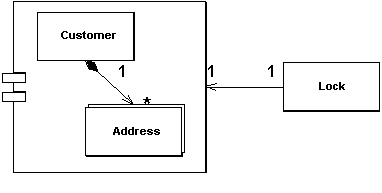

Coarse Grained Lock (Грубая блокировка)

Паттерн проектирования Coarse Grained Lock
Описание Coarse Grained Lock
Блокирует набор связанных объектов при помощи одной блокировки.
Объекты часто могут отредактироваться в группе. Например, есть клиент и набор его адресов. В таком случае можно блокировать их все, если надо обратиться к одному из них. Блокировка их по отдельности приведёт к множеству проблем. Во-первых все кто пытается работать с такими данными, будет вынужден создавать код для поиска всех записей, чтобы потом заблокировать их. Это достаточно просто в примере с клиентом и адресами, но что, если группа будет более сложной или групп будет больше. Куда поместить часть программной логики, которая отвечает за слияние блокировок. Если в стратегию блокировки входит правило, в соответствии с которым объект должен быть загружен перед блокировкой, как например в Optimistic Offline Lock , то блокировка большого массива объектов вызовет провал в производительности. А в случае с Pessimistic Offline Lock , большая блокировка вызовет проблемы с управлением и увеличит конкуренцию за блокировки.
Паттерн Coarse-Grained Lock представляет собой одиночную блокировку, которая покрывает множество объектов. Она не только упрощает работу с блокировками, но ещё и освобождает разработчика от необходимости загружать все элементы группы, чтобы заблокировать их.
Использована иллюстрация с сайта Мартина Фаулера.